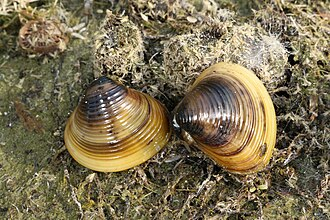

しじみの漁獲量 都道府県ランキング
全16都道府県の順位と漁獲量
しじみの漁獲量が全国で最も多いのは島根県で、4,647 tです。全国（9,462 t）の49%を占めます。

| 順位 | 都道府県 | 漁獲量 | 全国に占める割合 |
|---|---|---|---|
| 1位 | 島根県 | 4,647 t | 49% |
| 2位 | 青森県 | 2,730 t | 29% |
| 3位 | 茨城県 | 960 t | 10% |
| 4位 | 北海道 | 406 t | 4.3% |
| 5位 | 三重県 | 294 t | 3.1% |
| 6位 | 鳥取県 | 216 t | 2.3% |
| 7位 | 宮城県 | 66 t | 0.7% |
| 8位 | 新潟県 | 62 t | 0.7% |
| 9位 | 愛知県 | 29 t | 0.3% |
| 10位 | 滋賀県 | 24 t | 0.3% |
| 11位 | 福岡県 | 18 t | 0.2% |
| 12位 | 岐阜県 | 8 t | 0.1% |
| 13位 | 東京都 | 2 t | 0.0% |
| 14位 | 兵庫県 | 1 t | 0.0% |
| 15位 | 徳島県 | 1 t | 0.0% |
| 16位 | 宮崎県 | 1 t | 0.0% |
しじみの漁獲量の推移（令和2年〜令和6年）
全国の漁獲量は、令和2年の8,894 tから令和6年の9,462 tへ、6%増えました。期間中、1位は一貫して島根県です。
| 年 | 全国 | 1位 | 2位 | 3位 |
|---|---|---|---|---|
| 令和6年 | 9,462 t | 島根県4,647 t | 青森県2,730 t | 茨城県960 t |
| 令和5年 | 9,263 t | 島根県4,615 t | 青森県2,217 t | 茨城県1,328 t |
| 令和4年 | 8,313 t | 島根県4,286 t | 青森県2,045 t | 茨城県977 t |
| 令和3年 | 9,001 t | 島根県4,171 t | 青森県2,289 t | 茨城県1,413 t |
| 令和2年 | 8,894 t | 島根県4,039 t | 青森県2,326 t | 茨城県1,348 t |
この数字について
- 分類：貝の仲間
- 全国の漁獲量：9,462 t
- この数字が表すもの：漁獲量（河川・湖沼での漁獲量）
- 調査：内水面漁業生産統計調査（内水面漁業） 令和6年
- この品目は川や湖の統計です。
- 16県分を調査（調査していない県は順位に入りません）
しじみの漁獲量について、よくある質問
- しじみの漁獲量が日本一の都道府県はどこですか？
- 島根県です。内水面漁業生産統計調査（内水面漁業）（令和6年）で4,647 tでした。
- しじみの漁獲量ランキング2位・3位はどこですか？
- 2位は青森県（2,730 t）、3位は茨城県（960 t）です。
- しじみの漁獲量ランキング4位・5位はどこですか？
- 4位は北海道（406 t）、5位は三重県（294 t）です。しじみの全16県の順位は上の表のとおりです。
- しじみの全国の漁獲量はどれくらいですか？
- 9,462 t（令和6年）です。